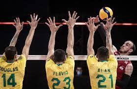
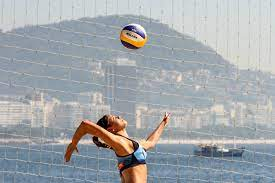
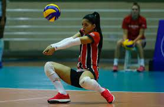
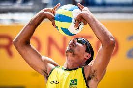
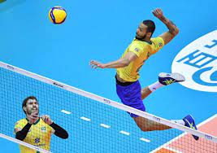

Voleibol
Criado em 1895, nos Estados Unidos, por William George Morgan (1870-1942), o primeiro nome do voleibol foi “mintonette”. A criação de Morgan, que era professor de educação física, foi influenciada por uma série de fatores, tais como: ter um jogo em que o risco de lesão fosse reduzido; em termos físicos, não exigisse muito dos participantes; pudesse ser jogado em quadra fechada e, simplesmente, para inovar as suas aulas.
William George Morgan, professor e diretor de Educação Física na Associação Cristã de Moços (ACM), idealizou um jogo em que a probabilidade dos participantes se machucarem, em detrimento de contato físico, fossem baixas. Outro fator importante - e pensado nos jogadores mais velhos - era que o esporte não fosse fisicamente tão exigente. Na época, o basquete estava na moda. Havia sido criado 4 anos antes, também por um professor de educação física da Associação Cristão dos Moços, que inventou o esporte em alternativa a jogos mais violentos como o basebol e o futebol. E assim surgiu o vôlei - chamado de "mintonette" - que, graças ao fato de cada uma das equipes ficarem separadas por uma rede, trazia menos chances de lesões.
Além disso, era menos exigente em termos físicos do que o basquetebol - uma vez que os jogadores não precisavam correr ao longo do jogo por toda a quadra. O vôlei, no entanto, era muito completo, pois compreendia uma série de exercícios benéficos para a saúde.
Outros fatores que concorreram com a invenção do vôlei foram a intenção de Morgan em inovar as suas aulas para que conseguisse cativar mais alunos, e o fato do vôlei poder ser praticado no inverno rigoroso dos Estados Unidos - já que era disputado em quadra fechada. A bola usada no jogo seria o próximo desafio. Utilizando primeiramente apenas a câmera de ar da bola de basquete, Morgan tentou deixar a bola menor e mais leve. Mas isso não era suficiente, e Morgan solicitou à firma A.G. Spalding & Bros. a criação de uma bola específica, de modo que após várias tentativas conseguiram obter uma bola com o tamanho e peso ideais para a prática do voleibol.
Principais regras:
- Cada equipe possui um técnico;
- Uma partida é constituída de 5 sets;
- Não existe tempo pré-determinado para cada set;
- Cada set tem um máximo de 25 pontos com uma diferença mínima de 2 pontos;
- Em caso de empate no set no final (24 x 24), a partida continua até que a diferença de dois pontos seja atingida (26 x 24, 27 x 25, etc.);
- Após o saque, a equipe só pode tocar três vezes na bola;
- Ganha a equipe que vencer três sets;
- Se houver empate nos sets (2x2) o 5º set será decisivo.
Posições no jogo:
- 3 jogadores posicionam-se perto da rede;
- 3 jogadores posicionam-se na linha de trás.
Quando se comete faltas no vôlei?
- Dois Toques: quando um jogador toca a bola duas vezes consecutivas ou a bola bate em várias partes de seu corpo.
- Quatro Toques: quando a equipe toca na bola quatro vezes antes de enviá-la aos adversários.
- Toque apoiado: quando um jogador se apoia em outro da sua equipe. Também é considerado falta se ele se apoia em alguma estrutura ou objeto dentro da área de jogo para golpear a bola.
- Rotação: se a rotação entre os jogadores não acontecer de maneira correta na hora do saque, a equipe comete falta.
- Rede: se jogar a bola entre o espaço das duas antenas próximas da rede, o jogador cometerá falta.
Fundamentos do Volei
- Saque: O saque é considerado o primeiro ataque, porque é o fundamento que dá início ao jogo ou ao rally - que compreende o momento em que o árbitro apita até a marcação de um ponto.Para executar um saque, o sacador segura a bola com uma mão e com a outra bate nela para a lançar por cima da rede em direção à quadra adversária. Se a bola tocar na quadra do adversário, a equipe marca ponto, mas se a bola for longe e sair da quadra, a equipe adversária faz um novo saque. Um saque cuja bola bata na rede, por sua vez, garante ponto à equipe adversária. Há três principais tipos de saque, sendo eles:
- Saque por baixo: é o saque menos potente. O jogador deve segurar a bola com uma mão e bater-lhe com a outra, aberta ou fechada, fazendo um movimento de baixo para cima.
- Saque por cima: é o saque mais utilizado e em que a bola é lançada com força. Nesse tipo de saque, o jogador deve lançar a bola para cima, com uma mão, e bater-lhe com a outra.
- Saque em suspensão: é o saque mais potente. O jogador lança a bola para cima e, saltando, bate nela como se fosse fazer uma cortada, ou seja, num movimento de cima para baixo.
- Recepção: A jogada de defesa que recebe o saque é chamado de recepção. Uma recepção bem feita possibilita um desempenho melhor no ataque da equipe. A recepção costuma ser realizada através do toque ou da manchete.
- Levantamento: O levantamento é o fundamento em que os jogadores tentam levantar a bola para auxiliar os atacantes a devolverem a bola para a quadra adversária tentando marcar ponto.
- Ataque: O ataque é o fundamento que geralmente finaliza um rally. Existem vários tipos de ataque: ataque de bola alta nas extremidades, ataque de bola rápida nas extremidades, ataque de bola rápida no meio, ataque de fundo da quadra, ataque de meio.
- Bloqueio: O bloqueio é a jogada que tenta impedir que a bola lançada pelo adversário ultrapasse a rede alcançando o lado da quadra da outra equipe e não só: o bloqueio tenta fazer com que a bola bata no chão da quadra adversária para marcar ponto. Para tanto, o(s) jogador(es) se posiciona(m) perto da rede para impedir que a bola avance. 




Praticado no Brasil, pela primeira vez, em 1915, hoje o voleibol é um esporte muito conhecido. Inicialmente, era considerado um jogo para meninas, mas com o passar do tempo isso foi mudando. Vale notar que em 1984 o time de voleibol masculino brasileiro ganhou a sua primeira medalha olímpica nos Jogos Olímpicos de Los Angeles. A medalha conquistada foi de prata, motivo pelo qual a equipe ficou conhecida como Geração de Prata, mas a sua importância foi tão grande que teve o mesmo peso que uma medalha de ouro. Esse momento foi um grande passo para disseminar o vôlei entre homens e mulheres. A Geração de Prata conquistou a primeira medalha olímpica no vôlei masculino para o Brasil oito anos depois, nos Jogos Olímpicos de Barcelona, a equipe masculina de vôlei conquistou o tão sonhado ouro. Ao todo, os homens somam 6 medalhas olímpicas, sendo 3 de ouro (1992, 2004 e 2016) e 3 de prata (1984, 2008 e 2012).